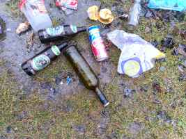
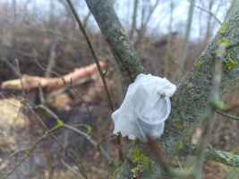
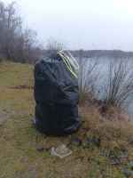
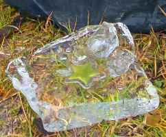

Áno odpadkov na jazerách je už menej, ľudí čo ich zbiera je viac. Samozrejme odpadky sa tam budú vyskytovať aj naďalej(pretože niektorí jednotlivci sa jednoducho nezmenia).
Pokračovať v zbere budem aj nadalej, avšak budem to uverejňovať už iba tu:
zber odpadkov 24.02.2024
Rybárske miesto kde sú v anonimite. Doniesli si tam drievka, že si budú opekať (čo je tam len tak mimochodom zakázané), dali ich do žltého igelitového sáčku, nechali tam a mysleli si, že im tak nenavlhnú.
Žltý sáčok som pridal k ďalším odpadkom z kríkov a brehov pri vode, ktoré som vyzbieral z tohoto miesta v zadu na veľkom jazere.
zber odpadkov 03.03.2024
Dnes Billa igelitka zahodená hlboko v kríkoch, syntetické servítky, a ďalší odpad...
zber odpadkov 10.03.2024
V zadu na veľkom jazere, na miestach kde sa v lete zdržuje mláďež, som dokončil zber odpadkov čo tam ešte poostávali. Všetko odpadky hodené
v nedostupných kríkoch. Našiel som napr. zadné svetlo z bicykla aj s batériami, sprej v ktorom bolo ešte trochu farby atď.
zber odpadkov 05.05.2024
Rozobrané rybárske závažie ( naliaty betón do PET fľaše + zapustený drôt) vyhodené v kríkoch na brehu.
zber odpadkov 17.10.2024
V tomto období bola hladina vody na jazere dosť vysoká, pozbieral som odpad z dvoch miest na južnej strane veľkého jazera.
Odpad prevažne hodený v kríkoch a vo vysokej tráve. Ale na jednom mieste bol položený na nedostupnom strmom brehu hneď nad vodou.
Najprv som si myslel,že to je mikroténový sáčok. Čo to bolo ma prekvapilo - syntetické obrúsky a do nich zabalená injekčná striekačka.
No paráda!
zber odpadkov 03.11.2024
Odpadkov na jazerách je pomenej, ale predsa len nejaké som tam našiel, hlavne na miestach kde sa zdržujú rybári - "milovníci" pobytu v prírode.
Alebo skôr obžerstva a ožralstva - to na niektorých rybárov sedí. 5-ta cenová a po týchto zmrdoch potom zbierame odpadky, lebo oni sa
ožerú a nechajú po sebe ohniská a bordel. Všetko pohádzané v kríkoch - poschovávané. Zlomená rybárska udica, silón, ciagerty, špaky, mikrotén, servítky atď... A je ich tam viac, poostávalo aj na miestach,
v kríkoch, kde sa v lete zdržuje mládež. Ešte že existujú ľudia ktorí si vážia prírodu.
zber odpadkov 24.11.2024
Na jazerách v posledných rokoch pribudlo ľudí čo zbierajú odpadky. Odpadkov je síce menej, ale stále sú tam pohádzané a poschovávané kade tade.
Najmä na miestach, ktoré sú viac ukryté. Takže možnosť ako mať čisté jazerá je len jedna - zbierať, zbierať, zbierať - aj na nedostupnejších miestach. Inak sa stane to, že jazerá budú opäť ako jedno veľké smetisko.
Dnes som pozbieral odpadky z jedného miesta, iba plaveckú plutvu som našiel vyhodenú pri lesnej cestičke kúsok od veľkého jazera. Vo vode
som našiel mikroténový sáčok, pri vode repelent spray s obsahom, polystyrén krabicu so slamkami, pravdepodobne slúžiacu ako plavák, PET fľašu ...
zber odpadkov 29.12.2024
Ak sa kedysi stávalo, že polícia pokutovala a vyháňala ľudí z jazier, dnes už je kúpanie sa na malom jazere
povolené a na veľkom jazere tolerované, nikto už nikoho nevyháňa.
Ale už len ak na veľkom jazere zídete z turistickej cestičky - porušujete zákon a nemusíte sa kúpať v jazere. Je tam zákaz pohyovať sa mimo vyhradených chodníkov.
Ak váš pes nie je na vôcke a behá si mimo turistických chodníkov - porušujete zákon. Ak trháte pri jazere šípky alebo hríby - porušujete zákon.
Teraz však je na veľkom jazere sloboda, štátna ochrana prírody nemá dostatok ľudí a ani prostriedky na kontrolu zákona a pred porušovaním zákona zatvára oči.
Na jazere je akási sloboda a za to že tam nie je smetisko vďačíme iba dobrovoľníkom.
Niektorí ľudia si ale neuvedomjú, že si túto slobodu na jazerách musia vážiť, lebo sa môže stať že o ňu prídu.
Áno veľa návštevníkov sa správa slušne a aj keď čiastočne porušujú zákon, nie je to nič čo by ohrozovalo prírodu.
Za posledné roky sa z jazier stala celoročná turistická atrakcia Bratislavy. V lete a počas sviatkov tam prúdia davy návštevníov.
Rodinky s deťmi, bežci, plavci a otužilci, nudisti, turisti zo Slovenska ale aj zahraničia.
Všetci objavujú krásu Čunovsých štrkovísk a okolia. Veľa z nich ani nevie (alebo ani nechce vedieť), že sa ocitli v prírode so štvrtým stupňom ochrany.
Na jazerách sa často stretávam nielen s vyhodeným odpadom, ničením okolitej prírody, ale často aj s
hlučnými skupinkami partií, rodiniek, rybárov, otužilcov.
Stáva sa že si tam niektorí púšťajú hlasnú hudbu, alebo sa tam dovezú na motorkách, zakladajú ohne.
Akoby krásne prírodné prostredie priťahovalo práve takéto sebecké indivíduá, ktoré nevedia ako sa správať v prírode. Vďaka takýmto jedincom sa ale
môže stať, že štátne inštitúcie sa prebudia a kúpanie sa na jazerách už nebude ďalej tolerované a jazerá sa uzavrú. Bola by to veľká škoda!
Koniec roka 2024 sa blíži. Na jazerách bol dnes tenký ľad, malé jazero pokrýval celé a veľké iba čiastočne.
Pozbieral som odpadky z miest pri vode veľkého jazera zo strany pri asfaltke. Z vody som vybral žltý sáčok na smeti.
Ryársky odpad ako zavárací pohár s kukuricou som našiel zastrčený v diere v upravenom brehu. Našiel som aj rybársky silón.
Samozrejme špaky. Zapaľovač niekto nechal v padnutom strome. Ďalšie odpadky ako nejaký aplikátor, časť dámskej vložky, mikrotén, obaly, PET, konzerva...
zber odpadkov 07.01.2025 publikované na facebooku 08.01.2025
Vpredu Čunovské jazerá vyzerajú čisto ale vzadu je to už horšie. V hustom poraste odpadky nevidno, ale zima ukázala ako sa niektoré 🐷 činili. Tak som zas trochu priložil ruku k dielu. 😊
Predvčerom v pondelok sme boli s priateľkou pozrieť jazerá. Mali sme viac času a tak sme obehli okolo celého veľkého jazera a pozrel som si miesta, kde som už dávnejšie nebol. Boli sme zhrození, koľko odpadkov sme videli na miestach v zadu na jazere.
Dve miesta boli neskutočne zahádzané odpadkami.
1. miesto je tam kde sa v sezóne zdržiava mládež.
2. miesto je pri skrytých nudistických plážach pri lavičke a menšej mokradi s padnutými stromami.
Včera sme to boli vyzbierať. Chceli sme tak urobiť doobeda, kým nebude pršať, avšak dážď sa spustil skôr a tak
sme počas zberu trošku aj zmokli. Našťastie sme sa obliekli do dažďa.
1. Začali sme zbierať (alebo skôr predierať sa) na miestach kde sa často zdržiava mládež. Mladí sa tam ukrývajú a robia si párty.
Nechávajú tam všetok ten bordel, plechovky, fľaše z alkoholu a limonád, obaly najmä z čipsov, mikrotén atď.
Niektoré obaly sa už rozpadávali. Našiel som tam aj zabalené plastové poháre, príbor, dušu z bicykla. Všetko pohádzané v ťažko dostupných a pichľavých kríkoch.
Skládka odpadu teenagerov. Blízko sú aj rybárske miesta, kde som už tradične ponachádzal rybársky odpad: špaky, alkoholové fľaše, silón, rybársku sieť,
alobal, konzervy z kukurice a dokonca aj takmer celý toaletný papier...
Vrátili sme sa kúsok naspäť a zo stromu pri cestičke dali dole aj plastovú stuhu.
Potom sme pozberali odpadky pri cestičke a niečo podočahovali zo šikmých brehov. Pri vode sme našli napr. obaly a zapaľovač, plechovky atď.
2. Zbierali sme ďalej smerom k veľkej trávnatej pláži. Za naplaveným drevom v rohu jazera sú mini pláže, kde trávia čas hlavne nudisti a kúsok odtiaľ pri lavičke
rybári. Je tam aj menšia mokraď s popadanými stromami. Mokraď bola celá úplne zahádzaná odpadkami. Odpad poskrývaný kade tade - no neskutočné ako
niektorí ľudia dokážu zašpiniť takéto pekné miesto. Bolo tam staré ohnisko s alobalom, konzervami a spáleným plastom.
Našli sme tam aj plastový vešiak, použité tampóny, uterák, vrecko zo stanu, nebezpečné črepiny, rybársky silón a krmítko, ďalšie konzervy, vedierko plné kameňov, sklo fľaše, sprchový gél/šampón, žiarovku, syntetické servítky, zhnitú kukricu v sáčku a veľa ďalšieho odpadu...
Pokračovali sme cez hlavnú pláž až k asfaltke. Na pláži je neskutočne veľa špakov po rybároch a dovolenkároch + kadejaký drobný odpad pozdĺž pláže a hlavne v kríkoch.
Pozbieral som tam aj gumový popruh a zo stromu dočahoval priviaty papierový lampión.
Na viac už sme nemali energiu. Celé som to pofotil, pomačkal a natlačil do jedného obrovského ťažkého vreca.
V kríkoch som našiel vyhodené pletivo už predtým používané proti bobriemu ohryzu.
Obalili sme ním bobrom načatý topoľ v tej mokradi, kde sme predtým zbierali odpadky.
Nejaké ohorky a plasty z hlavnej pláže sme pozbierali, ale je tam toho ešte dosť na zber.
|

|

normálne sme si z diaľky mysleli že to je
kondóm na strome, ale bola to len servítka
|

|

|